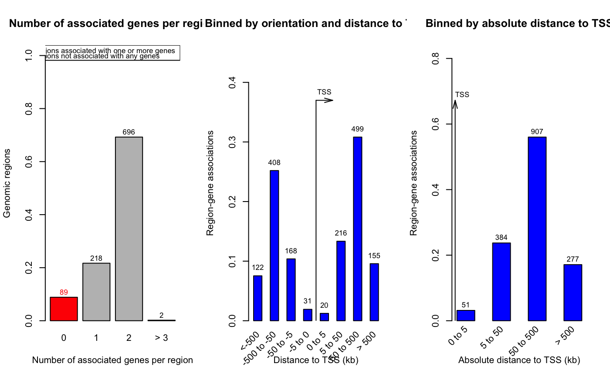
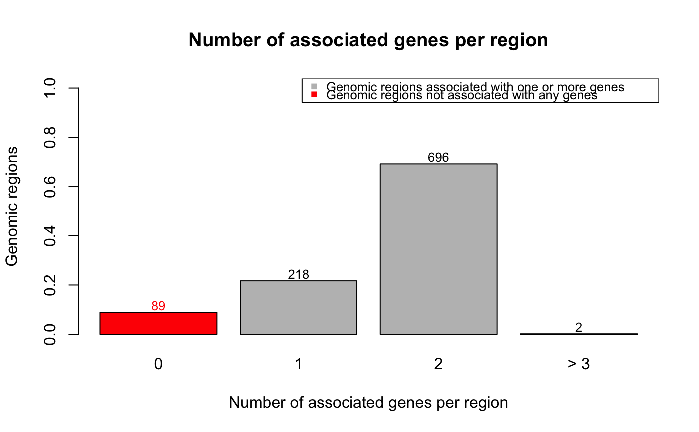
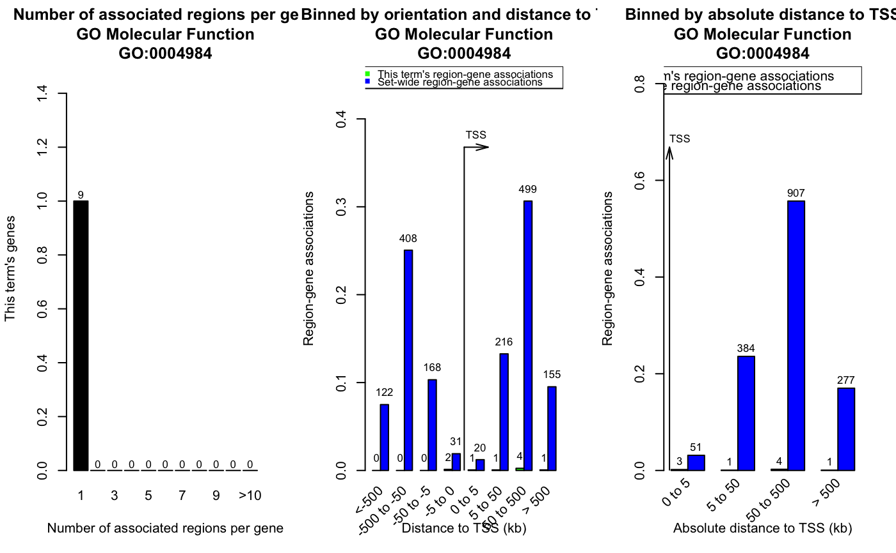

plotRegionGeneAssociationGraphs-GreatJob-method.RdPlot region-gene association figures
# S4 method for GreatJob plotRegionGeneAssociationGraphs(job, type = 1:3, ontology = NULL, termID = NULL, request_interval = 30, max_tries = 100, verbose = TRUE)
| job | a |
|---|---|
| type | type of plots, should be in |
| ontology | ontology name |
| termID | term id which corresponds to the selected ontology |
| request_interval | time interval for two requests. Default is 300 seconds. |
| max_tries | maximum tries |
| verbose | whether show message |
Generated figures are:
association between regions and genes
distribution of distance to TSS
distribution of absolute distance to TSS
If ontology and termID are set, only regions and genes corresponding to
selected ontology term will be used. Valid value for ontology is in
availableOntologies and valid value for termID is from 'id' column
in the table which is returned by getEnrichmentTables.
a GRanges object. Columns in metadata are:
genes that are associated with corresponding regions
distance from the regions to TSS of the associated gene
The returned values corresponds to whole input regions or only regions in specified ontology term, depending on user's setting.
If there is no gene associated with the region, corresponding gene and distTSS
columns will be NA.
# note the `job` was generated from GREAT 3.0.0 job = readRDS(system.file("extdata", "job.rds", package = "rGREAT")) res = plotRegionGeneAssociationGraphs(job)res#> GRanges object with 1708 ranges and 2 metadata columns: #> seqnames ranges strand | gene distTSS #> <Rle> <IRanges> <Rle> | <character> <numeric> #> [1] chr1 155726-2608935 * | ATAD3C -2738 #> [2] chr1 6134977-10483365 * | ERRFI1 -222803 #> [3] chr1 6134977-10483365 * | SLC45A1 -68715 #> [4] chr1 11354986-11423447 * | PTCHD2 -150078 #> [5] chr1 11354986-11423447 * | UBIAD1 55954 #> ... ... ... ... . ... ... #> [1704] chrY 36594469-36986560 * | <NA> <NA> #> [1705] chrY 38466369-40094584 * | <NA> <NA> #> [1706] chrY 44554177-44654068 * | <NA> <NA> #> [1707] chrY 46572517-50931029 * | <NA> <NA> #> [1708] chrY 53045400-56467562 * | <NA> <NA> #> ------- #> seqinfo: 24 sequences from an unspecified genome; no seqlengthsplotRegionGeneAssociationGraphs(job, type = 1)res = plotRegionGeneAssociationGraphs(job, ontology = "GO Molecular Function", termID = "GO:0004984")res#> GRanges object with 9 ranges and 2 metadata columns: #> seqnames ranges strand | gene distTSS #> <Rle> <IRanges> <Rle> | <character> <numeric> #> [1] chr3 97539225-98605059 * | OR5K4 -556 #> [2] chr11 5451667-5687557 * | OR52H1 -2833 #> [3] chr11 52004320-52314790 * | OR4C46 644273 #> [4] chr11 56236606-59435519 * | OR6Q1 37661 #> [5] chr11 56236606-59435519 * | OR9I1 50853 #> [6] chr15 22650187-22840775 * | OR4N4 363099 #> [7] chr16 2676812-4141377 * | OR2C1 3206 #> [8] chr17 2595702-3018690 * | OR1D5 159705 #> [9] chr22 15166009-17201109 * | OR11H1 266246 #> ------- #> seqinfo: 6 sequences from an unspecified genome; no seqlengths